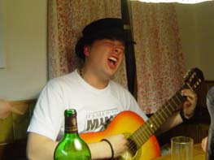
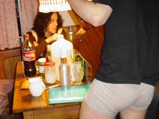
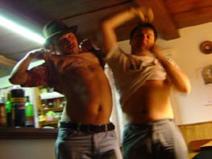

|
· 8. 4. 2005 : koneènì zpráva z víkendové horní svìtlé LÍPY |
|
Tak jsme si o víkendu vyjeli na neuvìøitelnou akci - napùl GPJP, napùl ZŠ Svobody - na chatu k Anièce Šiškové do Horní Svìtlé, kousek od Polsko-Nìmecka a hlavnì Èeské Lípy, sic! Tak v pátek jsme se sjeli - Anièka, Maggie Samk, Hošòous, Fíla, Tomku a Pierre, od soboty pak Jindra. A zas se dìlo akcí! Ukrutná vypíjeèka v první noc, kde vznikly všechny víkendové hlášky ("Ohrádky" - "Dámièky" apod.), vše korunováno vtipem "Nese chlap �enskou do postele a øíká jí: Myslíš, �e tvùj man�el opravdu nepije pivo?". Skonèili jsme v pìt ráno, kdy� Pierre s Fílou napsali novou prùbojnou píseò, propojenou s Nymburkovım nicnedìláním velikonoèním, respe konzervou, ji� Pierre opsal. V sobotu jsme vystøízlivìli, dali si rybièkovı talíø s topinkami (asi sedm druhù moøenek), a vyrazili si na vılet - Petr v nejlepších hadrech a novıch lakırkách, stejnì horsky nevybavenı Filip se street-wearem a Tomáš-kloboukista, jen� rozkopal sníh. A propos, byla tu nalezena maska, v ní� jsme v bøeznu '99 hráli na Novodvorské a Tom v ní pak došel sem. Setkání po letech. - Nu�e vılet - byl vtipnı, støídalo se dokonale teplé jaro se snìhem všude a tu a tam. Nakonec jsme si lehli do jednoho pangejtu, krásnì teplého, kterı jsme pak nalezli dvacet metrù od dálnice... A pak, vystoupení v Èeské Lípì. V Progresu. Pøijeli jsme velikášsky dvìma auty, dosud ještì tak trochu zøízeni nocí (mimochodem "Filipa" jsme zkoušeli na šestnáctkrát a nikdy nedokonèili...). Hned po pøíjezdu jsme koordinovanì obsadili místní nefunkèní hajzlik, splachovali nejprve hrstmi vody, poté kyblíkem, kterı se ale nevešel do umyvadla, a tak jsme jej v�dy dva plnili pùllitry, zatímco tøetí tento. Opravdoví kamarádi! Vystoupení u� tak vtipné nebylo. Ale - i bylo! Skoro nic se nám nepovedlo, ale odprdli jsme se nejvíckrát, šílené akce, a tak se publikum chytlo a nakonec jsme to odváleli do nìkolikerého pøídavku. Struènì: A já jsem! - ještì jsme spali. Hotel Šándorf - otevøené údivy (vtipné bylo naše pozadí - obraz se skálami, lesy a øekou, jako na zavolanou). Rozscestník - hodnì úspìšné, chytly se "vtipy". Veèernice - velmi kvalitní, a úplnì jiné, ne� jsme napsali... Filtr celkovì se nìjak nechytal, nebo to nebylo vidìt, ale sna�ili jsme se, a pak je udolali premiérou Pochoutky grimasy, velikého vrcholu. Té� se kupodivnì vyvedl "Filip". A nepovedlo moc Liho, které zde oslavilo své páté vıroèí za asistence pozvátora Ondøeje Homoly (té� vtipná jedna vìta ve "Filipovi"), alespoò bylo spontánnì o�iveno (po ètvrté Tomovì limonádièce) z "Umlaut U" na "Humus humus". Zato ty pøídavky - Èervi èili Køi�ovatka les s ukrutnou improvizací P+T v pozadí (Èervi se pøi pøedstavení zkrátili, a pøece se pak udìly celé. Mimocho - nejvìtší øev nastal, kdy� se F9lovi rozjel poklopec, co� herecky skvìle vyu�il a vypadl z pódia), Potkaly se co by dom nì lá teè ka a koneènì vytleskanı Èty�lístek, pøeètenı bez zkoušky na jednièku bez jediné chybky. Bom ba. A pak jsme jeli zpátky na chatu a šílenì se o�rali v druhém bìhu, hlavním hitem tentokráte byla Pochoutka grimasa a další hustì zmrvené trampské písnì, Hošna uhranul svojí deathmetalovou �ábou atd. Nad ránem uzavíral Tomáš s Petrem, v svìtle, za øevu "Di do vole prdele"... A pak jsme šli ještì ven, nalokali se vzduchu a chrú pší. A byla nedìle, Hošòous a Fíla odjeli, my šli do hospodky na piveèko a pak na vejlet, cestou jsme se hustì zkoulovali, abychom se pìt minut na to vyhøívali na sluníèku na nádherné pøehradì. Milión pohody, šílené. A ještì krásná cesta zpátky jedním autem ve zbylé ètyøce. Tomáš ve vrcholné chvíli vykøikl na protijedoucí stejnì zelené stejné auto: "Hele, tamhle jedem!"... A ještì vejlet k Èertovejm hlavám, pak debilní Praha pozdì veèer a ještì aspoò jedno pivko s Hošnou. Kurnik šop, to byla akce, bez mráèku, vy ohrádky! Nejsme �ádnı dámièky. PS: Chudák pape�, ten si u�il. Nejmenovanı èlen vıpravy: "No a co, tak tam pøijde jinej hajzl!" (Kouø) Ale my ho mìli rádi. Ale vá�nì! PPS: A vznikla i záhada, tajemství! Pili jsme Jelcina, jako�e vodku, a ta nám poslední noc zmizela. Hledali jsme ji jak fištróni furt a dokola, vìdìli, �e jsme ji opravdu nevypili, ale nenašli, v celej chatì nebyla. A� po tıdnu ji Anièka objevila - v mrazáku, vy ohrádky!!!... |
|
Dobøí kamarádi u rozscestníku (Filip Votava - Petr Jedinı Novotnı)   ...maska, se kterou jsme v roce '99 hráli na Novodvorské... |